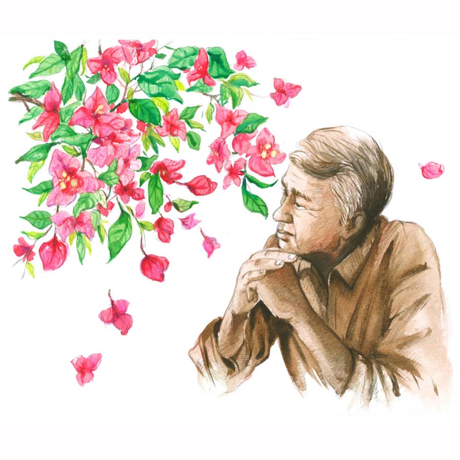

এসো না নভেম্বর
পার্থ দে
বাবা, ও বাবা, দরজাটা খোলো। মা, কোথায় গেলে তোমরা সব? কখন থেকে দরজার বাইরে দাঁড়িয়ে আছি, দরজাটা খোলো!”
প্রাণতোষ চমকে উঠে কাগজ থেকে মুখ তুললেন। ডোরবেলের শব্দ তাঁর কানে আসেনি, কিন্তু বাইরে থেকে প্রবীরের গলা ভেসে আসছে! তিনি স্পষ্ট শুনলেন।
নভেম্বর মাস পড়ে গেছে, প্রবীর তো আসবেই। ওকে যে আসতেই হবে। প্রবীর চাকরি পাওয়ার পর থেকে গত পনেরো বছরে এই রুটিনের ব্যতিক্রম হয়নি। ওর বদলির সরকারি চাকরি, বৌ আর ছেলেকে নিয়ে দূরে থাকে, প্রতি বছর পুজোতেও আসতে পারে না। কিন্তু প্রাণতোষ জানেন, ছেলে যেখানেই থাক, প্রতি বছর নভেম্বর মাসে এক বার ওর বাড়িতে আসা চাই। একেই বলে দায়িত্ববোধ! অত বড় চাকরি করে, কত বড় প্রশাসনিক দায়িত্ব ওর কাঁধে, গোটা একটা মহকুমা চালাতে হয়, তবু সময় বার করে নভেম্বর মাসে বাবার প্রয়োজন মেটাতে এক বার অন্তত আসবেই। ছেলের দায়িত্ববোধ নিয়ে গর্ব হয় প্রাণতোষের।
দোতলার জানলা দিয়ে মুখ বাড়িয়ে দেখলেন। গেটের বোগেনভিলিয়া গাছটার তলায় দাঁড়িয়ে আছে প্রবীর। একটা গোলাপি রঙের বোগেনভিলিয়া হাওয়ার তাড়নায় টুপ করে খসে পড়ল ওর কাঁধে। উপর দিকে তাকিয়ে প্রবীর হাসল। সেই ছেলেমানুষি হাসি, ছোটবেলা থেকে বিয়াল্লিশ বছর বয়স পর্যন্ত হুবহু একই রকম রয়ে গেছে। ঝকঝকে, অমলিন।
প্রাণতোষ ব্যস্ত হয়ে সরমাকে হাঁক দিয়ে ডাকলেন, “কী হল, কোথায় তুমি? আহা, নীচের রান্নাঘরেই তো রয়েছ, দরজাটা এক বার খুলে দিতে পারছ না, ছেলেটা দাঁড়িয়ে রয়েছে যে! আমি কি এই অকেজো হাঁটু নিয়ে চটজলদি সিঁড়ি বেয়ে নামতে পারি, বলো!”
সরমার কোনও সাড়াশব্দ নেই। কে জানে সকালবেলা পুজোয় বসেছে কি না, তার তো আবার গোপালের ঘুম ভাঙানো, শয্যা তোলার ব্যাপার-স্যাপার আছে। এ দিকে মা হয়ে তার আসল গোপালের ডাকটা শুনতে পাচ্ছে না! বেচারাকে দরজার বাইরে দাঁড় করিয়ে রেখেছে। ও দিকে বিন্তিটাও যে কোথায়, এ সময় তো রোজ বাসনকোসন মাজতে আসে, সেও কি দরজাটা খুলে দিতে পারে না! কাজের সময় এদের কাউকে পাওয়া যায় না। যত্ত সব ফাঁকিবাজের দল। ক্রমশ বিরক্তি বাড়ছে প্রাণতোষের।
ফাঁকিবাজি একদম পছন্দ নয় প্রাণতোষের। পনেরো বছর আগে অবসরের সময় যখন ট্রেজারি অফিসার ছিলেন, তখনও সহকর্মীদের কাজে ফাঁকি দেওয়া একদম পছন্দ করতেন না। ট্রেজারিতে একটা ওয়ার্ক কালচার গড়ে তুলেছিলেন। তবে তাঁর কড়া ধাতের জন্য বিরাগভাজনও হয়েছিলেন সহকর্মীদের অনেকের। একমাত্র বন্ধু বলতে ছিল সহকর্মী অরুণেশ। সেই বন্ধুত্বের সূত্র ধরে এই ইলোরা পার্কে প্লট কিনে দু’জনে পাশাপাশি বাড়ি করেছিলেন।
ভাবনার মধ্যে অরুণেশ ঢুকে পড়তেই মনে হল, প্রবীর যে এসেছে সেটা অরুণেশকে এখনই জানানো দরকার। না হলে এসেই বলবে, “অরুণেশ কাকুকে খবর দাওনি? তোমার সঙ্গে ওঁর সার্টিফিকেটটাও তো দিতে হবে, প্রতি বার যেমন দিই।”
ফোন করে এখুনি অরুণেশকে ডাকা দরকার। প্রবীর কত ক্ষণ থাকে না থাকে তার ঠিক নেই। হয়তো দুপুরে খেয়েই বলবে, “বাবা, আজ রাতের ট্রেনেই ফিরব। চাপ আছে, ছুটি পাব না। বড়দিনের ছুটিতে সোনাই আর মিলিকে পাঠিয়ে দেব।”
প্রাণতোষ হাত বাড়িয়ে ফোনটা কোথাও পেলেন না। সরমা কিংবা বিন্তিরও কোনও সাড়াশব্দ পাচ্ছেন না। জানলা দিয়ে দেখতে পাচ্ছেন, দরজার বাইরে দাঁড়িয়ে প্রবীর এ পাশ-ও পাশ তাকাচ্ছে, অধৈর্য হয়ে ডোরবেলটা টিপে যাচ্ছে। ওর মুখের ওপর সকালের এক টুকরো রোদ। আহা রে, ছেলেটা বাড়িতে ঢুকতে পারছে না, ঠায় দরজায় দাঁড়িয়ে আছে!
“কী গো, সকালবেলা ঘুম থেকে উঠে ফের ঘুমিয়ে পড়লে! খবরের কাগজ হাতে নিয়ে ঢুলছ, তোমার শরীর ঠিক আছে তো? নীচ থেকে কত ক্ষণ ধরে ডাকছি তোমায়, সাড়া না পেয়ে উঠে এলাম।”
চটকা ভেঙে প্রাণতোষ ফ্যালফ্যাল করে সামনে দাঁড়ানো সরমার দিকে তাকালেন।
“নীচের বসার ঘরে অরুণেশদা এসেছেন। যে ছেলেটার কথা বলেছিলেন, তাকে সঙ্গে করে নিয়ে এসেছেন। নীচে চলো।”
ট্রাইপড ওয়াকিং স্টিকটা হাতে নিয়ে প্রাণতোষ উঠে দাঁড়ালেন। খুব ধীরে ধীরে সিঁড়ি দিয়ে নেমে নীচের বসার ঘরে এলেন।
ঘরের সোফাটায় অরুণেশের পাশে একটি অচেনা ছেলে বসে আছে। ওর সামনের টি-টেবিলে একটা ল্যাপটপ খুলে রাখা।
অরুণেশ নিচুস্বরে বললেন, “এর কথাই তোকে বলেছিলাম, ওর নাম অন্তু।”
ছেলেটা প্রাণতোষের দিকে তাকিয়ে বলল, “জেঠু, খুবই সহজ ব্যাপার। একটা অ্যাপ আছে, তাতে অনলাইনে লাইফ সার্টিফিকেট জেনারেট হয়। প্রথমে পোর্টালে ঢুকে আপনার পিপিও নম্বর, আধার কার্ড নম্বর দিয়ে রেজিস্টার করতে হবে। তার পর সার্টিফিকেটের ফর্মটা ডাউনলোড করে নিতে হবে। সব শেষে এখানে আপনার ফিঙ্গারপ্রিন্ট, চোখের আইরিসের স্ক্যান বায়োমেট্রিক ডিভাইসে করে ফিড করলেই…”
“কিন্তু আমি তো এ সব অনলাইন-টনলাইনে কখনও করিনি। আসলে বরাবর ও-ই তো…” প্রাণতোষ কথাটা শেষ করতে পারলেন না, কান্নায় গলাটা বুজে এল।
অরুণেশ আলতো করে একটা হাত রাখলেন প্রাণতোষের কাঁধে, “এই অ্যাপটা খুব ভাল রে, তোর আধার কার্ড আর পিপিও নম্বরটা নিয়ে আয়, এখুনি হয়ে যাবে।”
ধরা গলায় প্রাণতোষ বললেন, “এই অ্যাপটার নাম কী?”
অন্তু খুব উৎসাহিত কণ্ঠে বলে উঠল, “এই অ্যাপটার নাম জীবন প্রমাণ।”
“জীবন প্রমাণ!” একটা ম্লান হাসি ফুটে উঠল প্রাণতোষের মুখে, “তার মানে বেঁচে থাকার প্রমাণ, কী অদ্ভুত নাম, না!”
অরুণেশ, সরমা আর অন্তুর বিহ্বল দৃষ্টির সামনে প্রাণতোষ যেন নিজের সঙ্গেই নিজে কথা বলছেন। আরও দু’বার বিড়বিড়িয়ে বললেন— জীবন প্রমাণ! জীবন প্রমাণ!
আচমকা মুখ তুলে দেয়ালে টাঙানো প্রবীরের ছবিটার দিকে তাকিয়ে বললেন, “আমি কি আর বেঁচে আছি রে, প্রবীর? কবেই তো মরে গেছি!”
ঘরের মধ্যে নেমে এসেছে এক অসহ্য স্তব্ধতা। শুধু দেয়ালঘড়ির কাঁটা নড়ার শব্দ শোনা যায়।
খুব নিচুস্বরে অন্তু বলে, “প্রবীরদা আমাকে চিনতেন, কত বার ডব্লিউবিসিএস আর কম্পিটিটিভ পরীক্ষা দেওয়ার জন্য উৎসাহ দিয়েছেন… ঘটনাটা শোনার পর, জানেন, বিশ্বাস করতে পারিনি।”
প্রাণতোষ সজল চোখে তাকালেন ছেলেটির দিকে। আর তখনই তাঁর নজরে পড়ল, অন্তুর জামার কলারের ভিতর আটকে আছে একটা শুকনো বোগেনভিলিয়া।